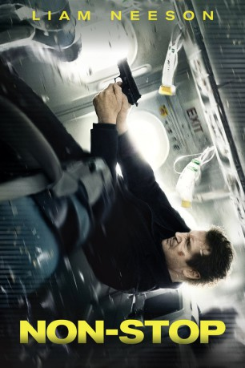

#686 Non-Stop
 gesehen am 30.05.2015
gesehen am 30.05.2015
 
 IMDB-Wertung: 7.0 / 10
IMDB-Wertung: 7.0 / 10  Metascore: 56
Metascore: 56 
Den Job des Air Marshalls übt Bill Marks nicht gerne aus: Er hasst das Warten, die Verspätungen und das lange Sitzen im Flugzeug. Doch während eines Fluges von New York nach London erhält er eine Textnachricht, aus der hervorgeht, dass alle 20 Minuten ein Passagier des Flugzeuges getötet wird, sollte er der Anweisung, 150 Millionen Dollar auf ein Konto zu überweisen, nicht Folge leisten. Im Wettlauf gegen die Zeit muss Bill herausfinden, wo sich der Erpresser an Bord des Flugzeugs befindet, was auf Unmut unter den anderen Leuten stößt, da sie durch die angespannten Anweisungen des Air Marshall zunehmend ängstlicher werden. Als sich rausstellt, dass das angegebene Konto auf Bill zurückzuführen ist und sich eine aktive Bombe an Bord befindet, wird er beschuldigt, das Flugzeug entführen zu wollen und somit vom Jäger zum Gejagten
Jahr: 2014
Dauer: 106 Minuten
FSK: 12
Land: England Studio: StudioCanalTonspuren: DTS - ,
Untertitel: Deutsch,
Auflösung: 1080p (1920x800) Größe: 11776 MB
Genre: Action, Mystery, Thriller
Regisseur: Jaume Collet-Serra
Drehbuch: John W. Richardson, Christopher Roach, Ryan Engle, John W. Richardson, Christopher Roach
Soundtrack: John Ottman
Darsteller:
 Liam Neeson als Bill Marks
Liam Neeson als Bill Marks Julianne Moore als Jen Summers
Julianne Moore als Jen Summers Scoot McNairy als Tom Bowen
Scoot McNairy als Tom Bowen Michelle Dockery als Nancy
Michelle Dockery als Nancy Nate Parker als Zack White
Nate Parker als Zack White Corey Stoll als Austin Reilly
Corey Stoll als Austin Reilly Lupita Nyong'o als Gwen
Lupita Nyong'o als Gwen Omar Metwally als Dr. Fahim Nasir
Omar Metwally als Dr. Fahim Nasir Jason Butler Harner als Kyle Rice
Jason Butler Harner als Kyle Rice Linus Roache als David McMillan
Linus Roache als David McMillan Shea Whigham als Agent Marenick
Shea Whigham als Agent Marenick Anson Mount als Jack Hammond
Anson Mount als Jack Hammond- Quinn McColgan als Becca
 Corey Hawkins als Travis Mitchell
Corey Hawkins als Travis Mitchell Frank Deal als Charles Wheeler
Frank Deal als Charles Wheeler- Bar Paly als Iris Marianne
- Edoardo Costa als Herve Philbert
 Jon Abrahams als David Norton
Jon Abrahams als David Norton- Amanda Quaid als Emily Norton
- Beth Dixon als Older Woman
- Cameron Moir als Steward
- Lars Gerhard als German Father
- Oliver Lehne als German Son
- Michael Thomas Walker als Michael Tate
 Pat Kiernan als NY1 Anchor
Pat Kiernan als NY1 Anchor Annika Pergament als NY1 Reporter
Annika Pergament als NY1 Reporter- Victoria Arbiter als Tilkynna 3 Reporter
- Jefrey Pollock als Pundit
- Dani de Waal als Airline Attendant
- Adi Hanash als Security Officer
- Finise Avery als Core Plane Passenger , uncredited
 Ari Barkan als Plane Passenger , uncredited
Ari Barkan als Plane Passenger , uncredited- Josh Bodenhamer als Giovanni , uncredited
- Alejandro Cardenas als Arturo Lucci , uncredited
- Kenneth Carrella als Icelandic Police , uncredited
- Rob Casasanta als Fire Truck Driver , uncredited
- Vince Edgehill als Core Plane Passenger , uncredited
- O.T. Fagbenle als Jack Rabbitte , uncredited
- Edgar Felix als Pedestrian , uncredited
- Bryan Fox als Core Plane Passenger , uncredited
- Kelly Hartnett als Core Plane Passenger 14E , uncredited
- Christine Hitt als Camila D'Agostino , uncredited
- Ashley James als Technician , uncredited
- Michael Kaplan als Passenger , uncredited
 Charlotte Kirk als Amy Harris , uncredited
Charlotte Kirk als Amy Harris , uncredited- Perri Lauren als Stella , uncredited
 Gregg Micheals als Core Plane Passenger , uncredited
Gregg Micheals als Core Plane Passenger , uncredited- Miou als Core Plane Passenger , uncredited
- Bryan A. Miranda als Core Moroccan Plane Passenger , uncredited
 John Mitchell als Iceland Police Officer , uncredited
John Mitchell als Iceland Police Officer , uncredited
Datei: X:\2014(N-Z)\Non-Stop (2014, FSK12, 1920x800).mkv seit 13.03.2015
Festplatte: HD 2013(I-Z)-2014(A-Z)
 Es gibt insgesamt 163 Filme in der Gruppe '2014(N-Z)'
Es gibt insgesamt 163 Filme in der Gruppe '2014(N-Z)'